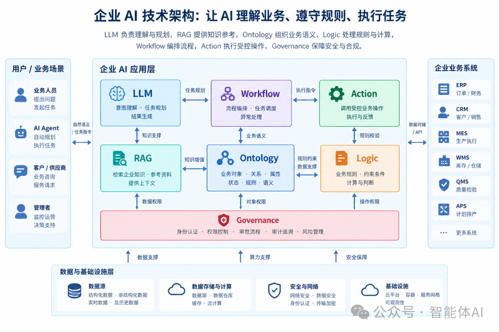
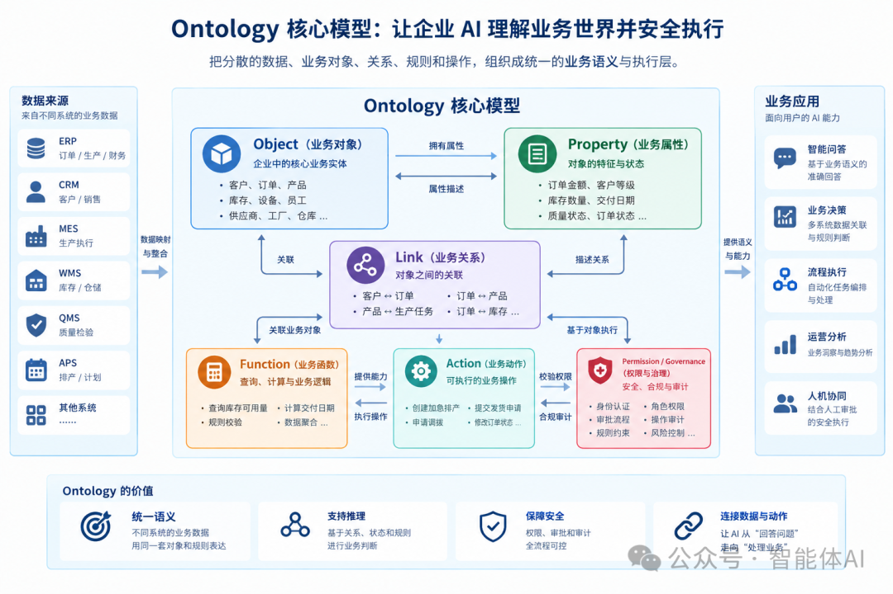
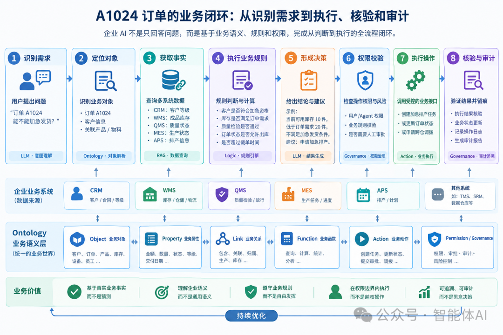

MCP解决连接RAG解决知识，那谁来解决业务理解：企业AI的本体论
来源：微信公众号 归档日期：2026-10-23 抓取状态：成功 原文字符：12142｜配图：3 张
摘要速览
- 企业 AI 的本体论：AI 会做事 ≠ 知道自己应该做什么——大模型能读文档、写代码、查库、调 API，MCP 连工具、Agent+Workflow 跑任务，但生产环境立刻露怯：「我们公司的 VIP 客户有哪些？」不是语言问题，各企业定义口径不同（年度采购额/战略价值/销售总监审批），库存也散在 ERP、WMS、在途、锁定多种口径——模型知道词，不知道本公司如何定义；主张业务理解要靠本体（Ontology）层补齐：连接靠 MCP、知识靠 RAG、业务理解靠本体。
核心内容
（待补充）
可执行启发
（待补充）
我的想法
（待补充）
原文沉淀
目录
- 一个订单，就能暴露企业 AI 最麻烦的问题
- 真正决定能不能发货的，根本不是一个字段
- Ontology 到底是什么？不要把它简单理解成知识图谱
- 企业里有哪些实体？这些实体之间有什么关系？
- RAG、Workflow、Ontology，到底有什么区别？
- 回到 A1024：Ontology 如何让 Agent 真正理解订单？
- Ontology 最重要的价值之一：让业务规则不再散落在代码里
- 企业 AI 需要的不是一句答案，而是一条证据链
- AI 可以提出 Action，但不能直接拥有最终执行权
- Ontology 不是另一套数据库，业务系统仍然是事实来源
- MCP 解决连接问题，Ontology 解决业务理解问题
- 真正危险的，不是没有本体，而是建出一个没人使用的本体
- 企业 AI 的下一道门槛，不只是模型能力，而是业务运行能力
AI 会做事，不等于 AI 知道自己应该做什么。
大模型已经能够做很多事情了。
它可以读企业文档、写代码、查询数据库、调用 API，也可以通过 MCP 连接外部工具，再借助 Agent 和 Workflow 完成一系列复杂任务。
单看技术演示，AI 已经越来越像一个能独立干活的数字员工。
但把它真正放进企业生产环境，问题就出来了。
「AI 会做事，不等于 AI 知道自己应该做什么。」
举个简单的例子。
你问大模型：“什么是 VIP 客户？”
它很容易给出一个合理的答案。
但如果你问：“我们公司的 VIP 客户有哪些？”
这就不是一个简单的语言问题了。
有的企业按照年度采购额划分 VIP，有的企业根据客户战略价值划分，还有的企业规定，只有经过销售总监审批的客户才能获得 VIP 身份。
模型知道 VIP 这个词，却不一定知道这家公司究竟如何定义 VIP。
再看库存。
ERP 里有库存，WMS 里有库存，在途物料也是库存。已经被其他订单锁定的货物同样可能出现在库存数据中，质检冻结的产品也可能有明确的数量记录。
但这些库存，真的都能拿来发货吗？
显然不是。
「库存、可用库存、可承诺库存、可发货库存，是四个可能完全不同的业务概念。」
这才是企业 AI 真正难以绕开的地方。
模型可以理解一个词的通用含义，却未必理解它在特定企业、特定业务和特定时刻究竟意味着什么。
企业需要的，不只是一个能够生成答案的模型，而是一个能够基于真实业务事实、业务规则和权限约束作出判断的系统。

这也是我认为 Ontology（本体）值得认真讨论的原因。
它不是给 AI 再增加一套知识库，也不是简单地把知识图谱做得更复杂。
它试图解决一个更基础的问题：
「如何把企业中分散的数据、业务对象、对象关系、业务规则和可执行动作，组织成一个 AI 能够理解并参与其中的业务世界。」
📌 本文看点
01
一个订单暴露的语义鸿沟
03
Ontology 到底是什么
07
答案之外，更要证据链
01
A REVEALING ORDER
一个订单，就能暴露企业 AI 最麻烦的问题
我们先不急着讨论本体的定义。
来看一个具体场景。
假设有一家阀门制造企业。客服收到客户的消息：
“订单 A1024 能不能加急发货？”
客服 Agent 开始查询企业系统。
ERP 返回一个状态：ALLOCATED。
MES 也返回一个状态：ALLOCATED。
如果只看这两个结果，模型很容易得出一个听起来合理的结论：订单已经分配好了，应该可以发货。
但问题在于，两个系统里的 ALLOCATED，可能根本不是一回事。
在 ERP 中，它可能表示原材料已经分配给这张订单；在 MES 中，它可能表示生产任务已经分配给某条产线。
原材料已经锁定，不代表产品已经生产完成。
生产能力已经分配，也不代表成品已经入库。
更不代表仓库现在就能发货。
真实的业务状态可能是这样的：
原材料已经锁定，生产任务已经排入计划，但生产尚未完成，成品库存仍然为零。
如果 Agent 把两个系统中相同的字符串理解成同一个业务状态，就可能在没有成品的情况下告诉客户：“可以发货。”
这里发生的不是简单的事实错误，而是一个更容易被忽略的问题：
「模型看懂了字段，却没有理解字段背后的业务含义。」
这类错误尤其值得警惕，因为它不一定表现为明显的胡说八道。
相反，模型的推理过程可能非常流畅，每一步听起来都有道理，最后却得出了一个不能用于真实业务的结论。
原因很简单：它把语言上的相似性，当成了业务上的等价性。
而企业系统恰恰不能这么工作。
02
BEYOND A SINGLE FIELD
真正决定能不能发货的，根本不是一个字段
继续看 A1024。
一家制造企业如果要判断某张订单能不能加急发货，可能需要同时检查：
客户是否符合加急服务的资格；
成品库存是否足够；
相关产品是否已经通过质量检验；
订单当前状态是否允许出库；
是否超过仓库截单时间；
是否存在其他订单占用库存；
是否需要额外审批。
这些信息分散在不同的业务系统里。
客户等级可能来自 CRM，库存来自 WMS，生产状态来自 MES，质量检验来自 QMS，排产信息来自 APS，订单状态则可能由 ERP 或订单管理系统维护。
每个系统都有自己的数据结构、状态定义和业务边界。
从各自的角度看，它们都可能是正确的。
但要回答“订单能不能加急发货”，就必须把这些信息放在同一个业务上下文中理解。
例如：
客户符合加急资格，不代表订单一定能发货。
库存数量足够，不代表库存没有被冻结。
质量检验通过，不代表订单状态已经允许出库。
所有条件都满足，也不代表发货动作可以绕过权限和审批。
这说明一个问题：
「企业不缺数据，真正缺少的是把数据组织成统一业务语义的能力。」
我们已经有 ERP、CRM、MES、WMS、QMS，也可能有数据仓库、数据湖、知识库、RAG 和 Agent 平台。
但这些系统各自保存着企业世界的一部分。
ERP 知道订单，WMS 知道库存，CRM 知道客户，MES 知道生产任务。它们未必天然共享一套能够支持跨系统决策的业务语义。
因此，企业 AI 面临的挑战，并不是把更多数据塞给模型，而是让模型知道：
这个订单是谁的订单？它关联什么产品？当前库存是什么状态？哪些规则决定订单能否发货？哪些动作允许执行？
这正是 Ontology 要解决的问题。
03
WHAT IS ONTOLOGY
Ontology 到底是什么？不要把它简单理解成知识图谱
要理解 Ontology，最好先从大家比较熟悉的知识图谱说起。
知识图谱通常关注实体及其关系。
例如：
客户 A 拥有订单 A1024，订单 A1024 包含产品 X，产品 X 由工厂 B 生产。
通过实体和关系，我们可以把原本分散在不同数据表中的信息连接起来。
它回答的是：
企业里有哪些实体？这些实体之间有什么关系？
这是非常重要的能力，但对于企业 AI 来说，还不够。
因为知道订单和产品有关联，并不意味着系统知道订单是否可以发货。
知道某个客户是 VIP，也不意味着系统知道这个客户能申请哪些特殊服务。
知道库存属于某个仓库，也不意味着系统知道这批库存能否承诺给某张订单。
企业 AI 需要进一步理解业务对象的属性、状态、约束、业务规则，以及与这些对象相关的操作。
因此，从企业 AI 的工程视角出发，可以用下面这个模型理解 Ontology：
Ontology = 业务对象 + 关系 + 业务语义 + 状态 + 逻辑 + 受控操作
这里需要说明，Ontology 在不同技术体系中的严格定义并不完全相同。传统语义网中的本体，重点可能在概念、属性、关系和公理；而 Palantir 等企业平台中的 Ontology System，则进一步把业务逻辑、操作能力和安全治理结合起来。
本文讨论的是后者所代表的企业 AI 应用方向。

我们可以把它拆成六个部分。
第一，Object：业务对象
客户、订单、产品、库存、设备、员工，都可以成为业务对象。
它们不是简单的数据库记录，而是业务人员真正关心、需要查询、判断和操作的对象。
第二，Property：业务属性
例如订单金额、客户等级、库存数量、交付日期、质量状态。
这些属性可以映射到底层系统中的字段，但对上层应用呈现的是相对统一的业务含义。
第三，Link：业务关系
订单属于哪个客户，包含哪些产品，由哪个工厂生产，关联哪些库存和发货记录。
关系让系统不再只是面对彼此孤立的数据。
第四，State 与 Logic：业务状态和业务逻辑
订单处于什么状态，库存是否可用，客户是否具备加急资格，以及多个条件同时成立时应该如何判断。
这里尤其要注意：业务状态不是随便定义一个字符串就结束了。它需要有明确的含义、来源和判定规则。
第五，Function 与 Action：业务计算和业务操作
Function 可以用于查询、计算或执行某种业务逻辑；Action 则用于表达一个具体的业务操作，例如创建加急排产任务、申请跨仓调拨或者提交发货申请。
二者的边界会因平台实现而有所不同，但关键是要区分“计算出一个结果”和“真正改变业务状态”。
第六，Security 与 Governance：安全和治理
谁可以读取订单？谁可以修改订单？谁可以审批加急请求？执行之后如何审计？
这些问题不能只依赖模型自己判断。
它们需要由企业的权限体系、业务规则和执行平台共同保障。
把这六个部分放在一起，Ontology 的作用就清楚了。
它不只是描述企业有什么，还试图把企业对象、业务规则和可执行操作连接起来，让 AI 能够在明确的业务边界内工作。
04
THREE DIFFERENT LAYERS
RAG、Workflow、Ontology，到底有什么区别？
这三个概念经常被放在一起讨论，也很容易被混为一谈。
实际上，它们解决的是不同层面的问题。
1． RAG：让 AI 找到需要的知识
假设用户问：
“公司的 VIP 客户可以申请哪些特殊服务？”
RAG 可以从制度文档、产品手册、业务规范中检索相关内容，再交给大模型生成回答。
它解决的是：企业的知识在哪里，当前问题需要参考哪些材料。
但假如用户接着问：
“订单 A1024 是否满足加急发货条件？”
这就不是检索一段制度文件能够直接解决的问题了。
系统还需要识别订单、关联客户、查询库存、确认质量状态，再按照企业规则进行判断。
RAG 可以为判断提供必要的知识，但不能仅仅因为检索到了某条规定，就认为业务条件已经满足。
2． Workflow：让流程按照确定的步骤执行
有人可能会说，既然需要检查客户等级、库存和质量状态，那就把流程写出来。
先查客户，再查库存，然后查质检，最后判断是否发货。
这就是 Workflow 的价值。
它把执行步骤组织起来，让系统按照确定的流程运行，而不是每次都让模型自由决定下一步做什么。
但随着业务规则不断增加，流程可能越来越复杂。
普通客户和 VIP 客户的处理方式不同，国内订单和海外订单不同，节假日和工作日不同，库存不足和质量异常又有各自的处理分支。
如果每个例外都直接写进程序控制流，Workflow 就可能逐渐变成一大堆嵌套的条件判断。
问题不在于 Workflow 不好，而在于：
流程编排、业务规则和业务数据之间，需要有更清晰的边界。
3． Ontology：让系统知道流程中操作的究竟是什么
Ontology 关心的是业务对象本身，以及对象之间的关系和业务含义。
当 Workflow 需要检查订单时，Ontology 可以提供统一的订单对象及其关联信息；当流程需要判断库存是否满足要求时，相关业务逻辑可以明确什么是可用库存，以及如何计算可承诺数量。
这样，流程就不必把所有业务含义都隐含在一堆字段和条件分支中。
三者可以这样理解：
RAG 负责找到知识。
Ontology 负责组织业务对象、关系和语义。
Workflow 负责编排任务和执行步骤。
业务规则可以由专门的规则引擎、服务或平台逻辑实现，并与 Ontology、Workflow 协同工作。
因此，它们不是非此即彼的替代关系。
在一个成熟的企业 AI 系统中，三者往往需要共同存在。
05
ONTOLOGY IN ACTION
回到 A1024：Ontology 如何让 Agent 真正理解订单？

现在重新看最初的问题：
“订单 A1024 能不能加急发货？”
如果没有统一的业务语义，Agent 可能需要自行拼接不同系统中的字段，再根据自然语言规则推测结果。
如果引入 Ontology System，处理方式就可以变得更加明确。
STEP 01识别业务意图
LLM 理解用户希望判断订单是否满足加急发货条件。
STEP 02定位业务对象
系统找到订单 A1024，并关联它所属的客户、产品、库存、质量检验记录和生产任务。
STEP 03读取当前业务事实
例如：
客户等级：VIP；
订单需求：20 件；
可用成品库存：10 件；
质量状态：PASS。
这些只是示例数据，实际生产环境中必须从可信的业务系统读取，并确认数据的时间、来源和有效性。
STEP 04执行业务规则
假设企业规定，加急发货必须满足：
可用成品库存大于或等于订单需求。
系统就可以根据当前事实进行判断：
10 件小于 20 件。
因此，即使客户是 VIP，质量检验也已经通过，订单仍然不满足直接加急发货的条件。
STEP 05给出有依据的结论
Agent 不应该只说“不能发货”，而应当说明：当前可用库存不足，缺少 10 件，因此不满足加急发货条件。
如果企业允许创建加急排产任务，系统可以进一步提出这个替代方案。
STEP 06执行受控操作
如果用户同意创建加急排产任务，系统还需要检查操作权限、参数、业务规则，以及是否需要人工审批。
满足条件后，才调用相应的 Action。
执行完成后，再读取业务系统中的结果，确认任务是否真正创建成功，并留下审计记录。
整个过程可以概括为：
理解意图 → 定位对象 → 获取事实 → 执行业务规则 → 形成决策 → 权限校验 → 审批与执行 → 结果核验
这才是企业 AI 从“回答问题”走向“处理业务”的关键变化。
！别把目标架构当开箱即用 🕳
上述流程是一种目标架构，并不意味着引入 Ontology 就能自动获得全部能力。数据映射、规则实现、权限校验、执行幂等性和结果核验，仍然需要具体的工程设计。
06
RULES OUT OF CODE
Ontology 最重要的价值之一：让业务规则不再散落在代码里
在很多企业软件中，业务规则并不是集中定义的。
它们可能分散在 Java 服务、SQL、存储过程、工作流配置、接口代码，甚至 Excel 和操作手册里。
例如，系统中有这样一段逻辑：
．．．python
if customer．vip：
if warehouse_a：
if current_time ＜ cutoff_time：
allow_expedited_shipment（）
程序员当然能够理解这段代码。
但业务人员真正关心的可能是：
VIP 客户在满足指定仓库条件、且未超过截单时间时，可以申请加急发货。
两者表达的是同一类业务意图，却处于不同的表达层次。
前者描述程序怎么执行，后者描述什么业务条件成立时允许采取某种行动。
如果业务规则散落在代码中，每次调整都可能涉及开发、测试、发布和回归验证。
但如果规则能够被独立建模和治理，业务变化就有机会通过规则配置或专门的规则系统完成，而不必每次都修改整个流程。
例如，企业原本规定加急申请必须在 16：00 前提交，后来决定对战略客户放宽到 18：00。
如果规则被清晰地定义为：
客户等级 = Strategic，业务类型 = 加急调拨，当前时间早于 18：00，允许提交加急调拨申请。
那么，系统就更容易明确这次变化影响哪些业务场景、哪些对象和哪些操作。
当然，这不意味着用了 Ontology，就能让业务人员随意改规则，更不意味着所有业务变化都不需要开发。
规则仍然需要版本管理、权限控制、测试、审批、生效时间、冲突检测和回滚机制。涉及复杂计算或事务处理的逻辑，也可能仍然需要由代码实现。
「Ontology 的价值，不是消灭代码，而是让业务语义、规则定义和程序实现之间的关系更加清晰。」
这会直接影响企业 AI 系统的可维护性。
07
THE EVIDENCE CHAIN
企业 AI 需要的不是一句答案，而是一条证据链
如果 AI 只是回答一个普通问题，回答错误的影响可能比较有限。
但如果 AI 的回答会进一步触发业务操作，要求就完全不同了。
假设 Agent 判断订单 A1024 可以加急发货，并提交了发货指令。
出了问题之后，企业必须知道：
这个判断依据了哪些事实？
库存数据来自哪个系统？
使用的是哪条业务规则？
规则当时是否有效？
谁发起了这个操作？
是否经过审批？
最终执行了什么动作？
业务系统实际发生了什么变化？
这些问题不能仅仅通过让模型多写几句解释来解决。
真正有价值的可解释性，来自可追溯的数据来源、明确的规则、执行记录和业务系统返回的结果。
对于 A1024，系统可以保留这样的决策记录：
决策结果： 不满足直接加急发货条件。
关键事实： 订单需求为 20 件，可用成品库存为 10 件，质量状态为 PASS。
判断规则： 加急发货要求可用成品库存不低于订单需求。
判断过程： 10 小于 20，因此库存条件不成立。
后续建议： 在具备相应权限的前提下，申请加急排产。
执行记录： 是否创建任务、由谁批准、业务系统返回什么结果。
这里需要区分两个概念。
模型生成的解释，不等于系统已经验证的证据。
只有当关键事实来自可信的数据源、规则实际被执行、操作结果得到核验，并且整个过程被记录下来，企业才能建立可靠的决策追溯链。
因此，对于真正进入生产环境的企业 AI，我更看重的不是它能不能把答案解释得头头是道，而是：
「它能不能证明自己为什么得出这个结论，以及这个结论究竟导致了什么。」
08
PROPOSE NOT EXECUTE
AI 可以提出 Action，但不能直接拥有最终执行权
当 Agent 开始参与真实业务，Ontology 的讨论就会自然延伸到另一个问题：安全。
假设模型判断某张订单需要修改交付日期。
如果系统允许它直接生成 SQL，连接生产数据库并修改记录，那么即使模型的判断只有很小的概率出错，也可能造成真实业务损失。
更合理的做法，是把意图生成与最终执行分开。
LLM 负责理解用户需求，提出一个结构化的 Action Request。
执行平台负责校验请求，包括：
操作对象是否存在；
参数是否完整、合法；
当前用户或 Agent 是否具备相应权限；
当前业务状态是否允许执行；
是否满足相关业务规则；
是否需要人工审批。
通过检查后，平台才调用受控的业务接口执行操作。
完成之后，还需要验证结果并记录审计信息。
这可以概括为：
「LLM 负责提出行动意图，执行平台负责决定行动能否发生。」
当然，具体实现不一定只有两步。有些低风险操作可以自动执行，有些涉及资金、客户承诺或生产变更的操作则必须经过审批。
关键不在于每个动作都要人工确认，而在于动作的权限、风险等级和执行条件必须明确。
这也解释了为什么企业 Ontology 不能只关注对象和关系。
如果一个系统知道订单是什么、库存在哪里，却没有明确的操作边界，那么它仍然不足以支撑安全的企业 Agent。
09
SOURCE OF TRUTH
Ontology 不是另一套数据库，业务系统仍然是事实来源
这里还有一个容易被误解的地方。
既然 Ontology 已经定义了订单、客户、库存、产品和发货记录，是不是意味着企业可以用它替代原来的 ERP、CRM 和 WMS？
当然不是。
至少在大多数现有企业架构中，不应该这样理解。
ERP 可能是订单状态的权威来源，WMS 负责维护仓储作业和库存状态，MES 维护生产执行信息，CRM 维护客户关系数据。
Ontology 可以把这些来源的数据映射成统一的业务对象，并为上层应用提供一致的访问方式。
但映射并不意味着所有数据都会自动保持实时一致。
不同系统之间可能存在同步延迟、事务边界差异和数据冲突。对于库存、订单状态等高风险信息，系统必须明确权威数据源、更新时间、数据新鲜度要求，以及在信息不一致时如何处理。
例如：
ERP 显示库存为 10 件，WMS 显示库存为 8 件，Ontology 中的缓存数据仍然是 12 件。
此时，系统不能简单地选择一个数字继续执行。
它需要知道哪个系统对当前业务状态具有权威性，是否需要重新查询，是否存在同步延迟，以及当前信息是否足以支持发货决策。
所以，更合理的关系是：
「业务系统维护真实业务状态，Ontology 统一表达业务语义，决策与执行机制在明确的规则和权限约束下使用这些信息。」
Ontology 不是偷偷复制出来的第二套真相。
它的价值，是让企业现有的数据和系统能够围绕业务对象协同工作，而不是要求企业推倒重来。
10
MCP AND ONTOLOGY
MCP 解决连接问题，Ontology 解决业务理解问题
最近几年，Agent 连接外部工具的方式正在逐渐标准化。
MCP 就是其中一个重要方向。
它可以让 Agent 通过统一的协议发现和使用外部工具、资源及相关能力，减少每个 Agent 都要为每个系统单独开发连接逻辑的负担。
但连接成功，不代表业务理解问题也随之解决。
假设 MCP 向 Agent 暴露了一个 update_order 工具。
Agent 知道可以调用这个工具，却仍然需要回答：
要修改的是哪张订单？
这张订单属于哪个客户？
当前订单处于什么状态？
修改交付日期会影响哪些业务？
什么条件下允许修改？
当前用户是否有权限？
修改失败之后应该怎么处理？
MCP 解决的是工具连接和交互问题。至于这些工具背后的业务对象、规则和权限如何组织，需要由具体的业务系统、服务和治理机制来提供。
Ontology 可以成为其中重要的一层。
如果 Agent 通过 MCP 访问一个具备 Ontology 能力的企业平台，它就有机会使用统一定义的业务对象、查询函数和预先配置的 Action，而不是直接面对大量彼此割裂的底层接口。
但这里也要避免另一个误区：MCP 本身并不保证工具调用安全，Ontology 也不会自动保证所有业务操作正确。实际安全性取决于工具设计、身份认证、授权机制、参数校验、业务规则和执行审计。
两者解决的是不同的问题，也可以组合起来使用。
11
THE ONTOLOGY MUSEUM
真正危险的，不是没有本体，而是建出一个没人使用的本体
说到这里，很容易让人觉得 Ontology 是企业 AI 的必选项。
但我不认为所有企业、所有 AI 场景都需要先建设一套完整的本体系统。
如果只是总结会议纪要、生成普通文档、回答公开知识问题，RAG、基础工具调用或简单 Workflow，可能已经足够。
没有必要为了追求架构完整，把每个业务概念都建模一遍。
真正需要认真考虑 Ontology 的，是那些依赖多个系统、多个业务对象和复杂规则的场景。
例如订单履约、供应链调度、库存分配、设备运维、客户风险管理。
这些场景通常有几个共同特点：
1
数据分散在多个系统中。
2
同一个业务概念在不同系统中可能存在不同定义。
3
一个决策往往依赖多个对象及其状态。
4
决策结果可能触发真实业务操作。
5
操作需要满足权限、规则和审计要求。
如果这些问题确实存在，那么统一业务语义就可能产生很大的价值。
但还有一个比技术选型更值得警惕的问题：本体博物馆。
有些项目投入大量时间定义概念、属性和关系，最后建立了庞大的模型，却没有任何一个真实业务流程使用它。
对象很多，关系很多，图谱也很漂亮。
但系统不能做出决策，不能触发操作，更不能形成业务闭环。
这样的本体，无论设计得多么精致，都很难产生相应的业务价值。
所以，我更倾向于从一个具体业务场景开始，而不是从一张覆盖整个企业的概念地图开始。
比如，先解决 A1024 这样的订单加急问题。
围绕这个问题，只建立必要的业务对象：客户、订单、产品、库存、质量检验和生产任务。
明确它们之间的关系，梳理加急发货的业务规则，接入必要的数据源，再定义允许执行的 Action。
然后验证三个结果：
1
系统能否正确判断订单是否满足加急条件？
2
系统能否解释判断依据，并追溯数据来源？
3
系统能否在权限和规则约束下执行后续动作，并验证最终结果？
如果这个场景真正跑通，再把经过验证的对象、规则和执行能力扩展到其他业务流程。
「先让本体解决一个真实问题，再逐步扩展业务世界，比一开始就建设一个庞大的概念体系更有意义。」
12
THE NEXT THRESHOLD
企业 AI 的下一道门槛，不只是模型能力，而是业务运行能力
回头看企业 AI 的发展，会发现我们一直在解决不同层次的问题。
早期，企业通过数据库和 BI 了解业务发生了什么。
随后，文档、知识库和 RAG 让模型能够查阅企业资料。
再往后，工具调用、Workflow 和 Agent 让 AI 开始参与任务执行。
但当 AI 真正进入复杂业务，问题就不再只是“它能不能回答”，也不只是“它能不能调用工具”。
而是：
它知道自己操作的是哪个业务对象吗？
它理解这个对象当前处于什么状态吗？
它知道这个状态在业务上意味着什么吗？
它能判断哪些条件已经满足、哪些条件还没有满足吗？
它知道自己是否有权执行下一步吗？
它能验证操作是否真正成功吗？
这些问题决定了 AI 能不能从一个辅助工具，逐渐成为企业业务流程中的可靠参与者。
在我看来，企业 AI 的技术架构正在从以模型和工具为中心，走向更加重视业务对象、业务语义、业务规则和受控执行的体系。
在这套体系里，各部分应该有明确分工：
LLM 负责理解意图、规划任务和组织表达。
RAG 负责检索文档与知识，为判断提供必要的参考材料。
Ontology 负责组织业务对象、关系、属性和状态，让不同系统中的信息能够在统一的业务语义下被理解。
Logic 负责业务规则、约束和确定性的计算。
Workflow 负责流程编排、任务调度和异常处理。
Action 负责调用受控的业务操作，把决策转化为实际执行。
Governance 负责身份、权限、审批、审计和风险控制。
这些部分并不是一套固定的产品清单，而是企业在建设可靠 AI 系统时需要考虑的不同能力。它们可以由不同的平台、服务和工程组件实现。
真正重要的，是不要让一个大模型承担所有责任。
模型可以提出判断，但关键业务事实应该来自可信的数据源；模型可以规划动作，但执行必须经过相应的校验；模型可以生成解释，但审计必须建立在真实的执行记录上。
回到最初的订单 A1024。
如果模型只是回答“可以加急”，它完成的只是一次问答。
如果系统能够找到订单，关联客户、库存、质量和生产状态，按照真实规则判断条件是否满足，说明判断依据，并在授权后执行相应操作，最后确认业务状态确实发生了变化，那么它才真正参与了企业业务。
这两者之间，差的不是一个更长的 Prompt，也不一定是一个更大的模型。
差的是一套能够让 AI 理解业务、使用业务事实、遵守业务规则并接受执行治理的工程体系。
「企业 AI 的下一道门槛，不只是让模型更聪明，而是让它真正进入企业的业务世界。」
而 Ontology 的意义，就在于为这件事提供一层重要的业务基础：让 AI 知道自己面对的是什么、这些东西有什么关系、当前发生了什么，以及接下来哪些事情可以做、哪些事情不能做。
END
归属：[[02-输入/按主题/AI与效率/_index|AI与效率]]